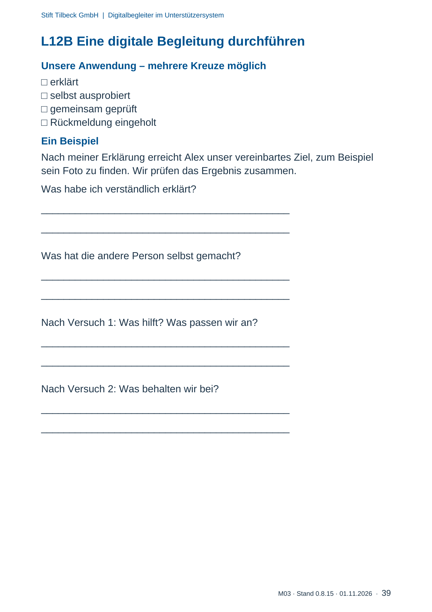

M03 · Originalseite 39
Eine digitale Begleitung durchführen
Gezielte Original-Druckauswahl.
Fragen und Ankreuzfelder werden auf dem Ausdruck bearbeitet. Die Lesefassung speichert keine Antworten.
Lesefassung · Seite 39
Stift Tilbeck GmbH | Digitalbegleiter im Unterstützersystem
M03 · Stand 0.8.15 · 01.11.2026 · 39
L12B Eine digitale Begleitung durchführen
Unsere Anwendung – mehrere Kreuze möglich
- erklärt
- selbst ausprobiert
- gemeinsam geprüft
- Rückmeldung eingeholt
Ein Beispiel
Nach meiner Erklärung erreicht Alex unser vereinbartes Ziel, zum Beispiel
sein Foto zu finden. Wir prüfen das Ergebnis zusammen.
Was habe ich verständlich erklärt?
Antwortbereich auf dem Ausdruck
Was hat die andere Person selbst gemacht?
Antwortbereich auf dem Ausdruck
Nach Versuch 1: Was hilft? Was passen wir an?
Antwortbereich auf dem Ausdruck
Nach Versuch 2: Was behalten wir bei?
Antwortbereich auf dem Ausdruck
Originalseite ansehen
